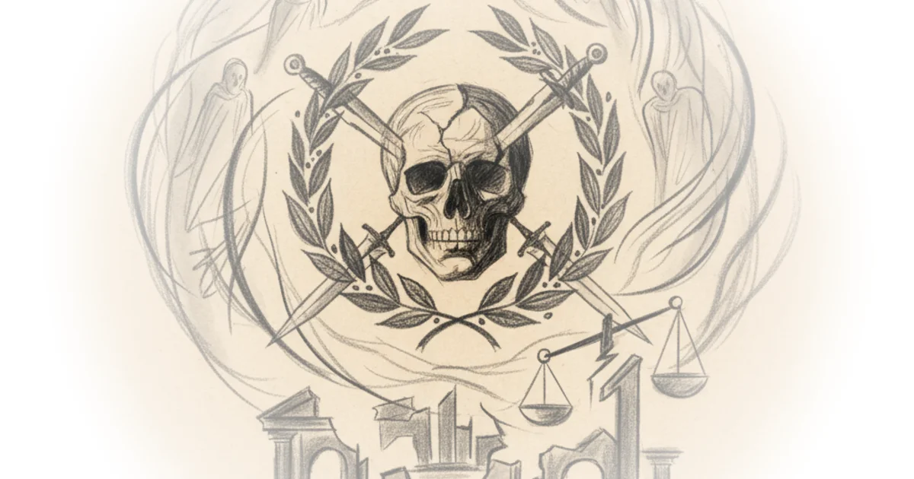

Shakespeare wasn't just telling a story about Julius Caesar—he was asking hard questions about political violence, moral idealism, and how rhetoric manipulates crowds. In Julius Caesar, these questions cut deeper than most readers realize.
Rome at the Edge of a Cliff
The play opens on a Roman populace celebrating their conqueror. But this isn't victory against a foreign enemy. Julius Caesar has just defeated Pompey—another Roman citizen—and his forces. The crowd cheers anyway, chanting Caesar's name in the streets.

Rome had spent decades in civil war. Tyrants rose and fell. And now, at this moment, the republic technically still stands—no single person runs everything. Power spreads across offices and councils. Citizens are supposed to argue together, work through differences peacefully. But watching that crowd cheer for Caesar, two senators standing in the crowd see something dangerous: monarchy behavior.
These officials point out how fickle the crowd looks. They're celebrating a Roman defeating other Romans—fellow citizens and neighbors. Where is the republic in this? The people are hitching their wagons to whoever will be in charge next. To be on the right side of things, you must be on team Caesar.
The two senators tear down Caesar's pictures from the walls. They see it clearly: this celebration stokes dangerous emotions that could spiral into making Caesar king.
Then Caesar appears at a ceremony in the public square. The crowd offers him the crown three times. He refuses each time—but people love him all the more for refusing.
From the back of the crowd, someone calls out: "Beware the Ides of March"—the 15th of March—it's coming in a few days. Caesar laughs it off. The crowd laughs with him.
Brutus and Cassius: Two Philosophers in One Conspiracy
After the ceremony, two men from Caesar's own inner circle have radically different reactions to what just happened.
Brutus paces, deep in thought. He's stressed. As a senator, he has a duty to protect the Republic. He has nothing against Caesar personally—but the crowd behavior makes him feel like they're about to lose Rome.
Brutus embodies stoicism—a philosophical approach deliberate Shakespeare uses to represent duty to country over personal moral development.
He wrestles with rational moral duty to Rome versus personal loyalty to Caesar as a fellow human and perhaps even friend.
Cassius has an entirely different monologue. He's long been a political rival of Caesar. He desperately does not want Julius Caesar to have monarch-level control. So he formulates a plan: kill Caesar before he gains power—but he knows the optics matter. If he assassinates alone, he'll look bloodthirsty. He needs someone moral, someone respected, to make the killing seem patriotic.
That's why he targets Brutus. He flatters him, reminds him his ancestor overthrew Rome's first king. He questions Brutus's honor: "Are you not a man of honor?"
Brutus wavers. He's not certain killing Caesar is what's best for Rome.
So Cassius manufactures fake letters—supposedly from Roman citizens—pleading with him to save Rome by eliminating Caesar. This manufactured picture of the world convinces Brutus to join the plot.
The Assassination
The conspirators persuade Caesar to come to the government building on the Ides of March. One asks Caesar to pardon his brother, banished from the city. As Caesar says no and is distracted—
Cassius pulls out a knife. "Speak, hands for me."
He stabs Julius Caesar. Each conspirator stabs in turn. Brutus is the last to stab. Caesar looks up at him and says the famous line: "You too, Brutus?"
The body lies lifeless. The killing seems successful.
Shakespeare's Real Message
But this is where Shakespeare gets deliberately ambiguous—and most readers miss it. It's a tragedy in the ancient Greek sense. There's no clear good guy or bad guy. Audiences must sit with uncomfortable complexity rather than idealize or demonize anyone.
One critical message cuts deeper: political violence is almost always naive about how political reality works. It rarely accomplishes what the perpetrators intended.
Consider history. How many times has someone assassinated a political enemy in a republic, and the whole world just moved on? "Oh, guess that person's dead. What are we going to do next?" That never happens.
Political violence emboldens those behind the target. It often transforms the person killed into a symbol far greater than themselves—strengthening rather than weakening their cause.
Shakespeare also points out hypocrisy in how conspirators frame their murder.
To preserve the Republic, I must kill this person I believe is dangerous—this is stepping outside peaceful political process to supposedly preserve peace.
Brutus and Cassius claim they're killing Caesar to preserve Rome's sanctity. But what republic exactly are they preserving? They look back at an idealized Rome where everyone worked together—a nostalgic fantasy that never actually existed in the first place.
Rome had already changed. It had been decades of civil wars, internal conflict. Killing one man won't revert that.
Counterargument
Some might argue Shakespeare's play actually celebrates political violence as heroic—the conspirators become martyrs for liberty against tyranny. But that's a reading Shakespeare deliberately complicates through Brutus's own tragic fate—destroying the very republic he claimed to save.
Bottom Line
Stephen West's analysis reveals what many miss: Julius Caesar isn't about whether killing tyrants is justified. It's about how those who commit political violence rarely understand what they're actually doing. They imagine themselves stopping change, but they're usually just accelerating it—while destroying their own principles in the process. Shakespeare's tragedy isn't about heroes or villains. It's about the naive, hypocritical, and ultimately counterproductive nature of killing for a cause—even when that cause is liberty itself.